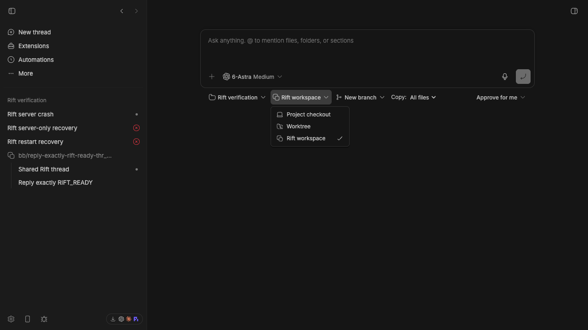
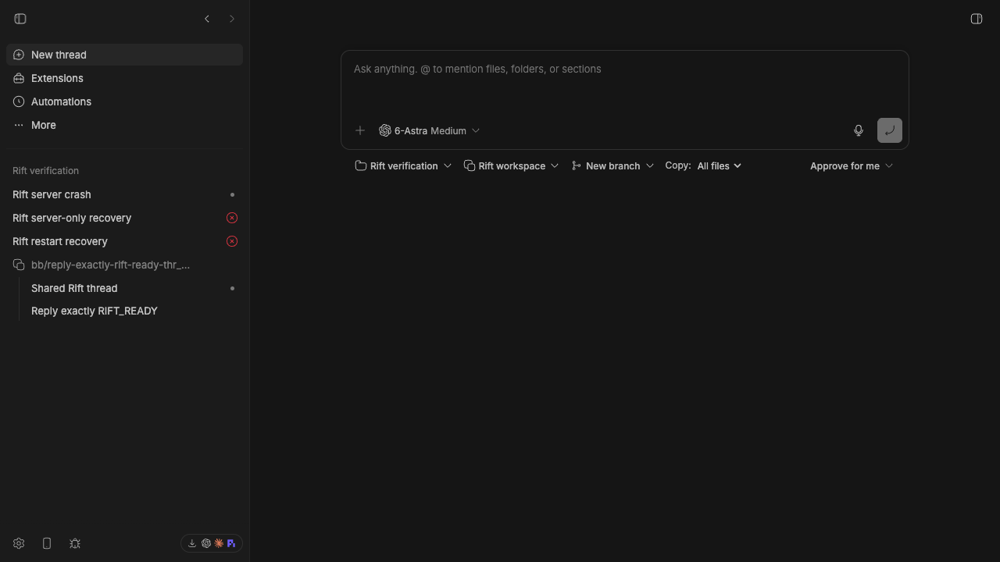
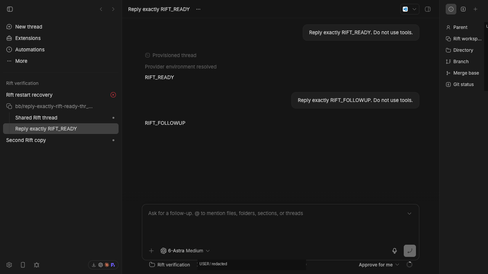
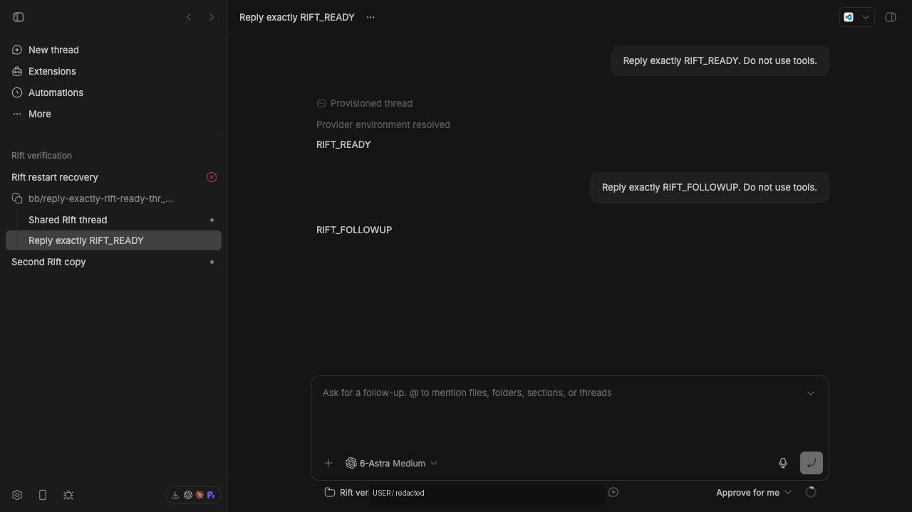
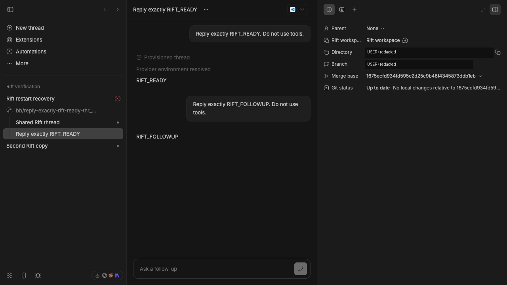
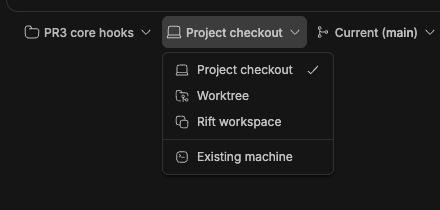

1. Summary
PR 3 in native stack #3232: #3227 → #3231 → #3229.
origin/bb/env-providers-2-machines...05707f66b3, with PR 2 pinned at 885fd8ffc4. The branch now sits on PR 2, matching its GitHub base bb/env-providers-2-machines; PR 2 itself contains PR 1 at b738452cc6, where setup/teardown hooks became core policy. The PR-relative footprint is 55 Rift-only files, including the stacked SDK release. The 53-file count recorded before the SDK follow-up excluded the two version files.A further rebase will follow once PR 2 gains the Modal v1.0 work; Rift must retain a distinct SDK version above that base.
Before
PR 2 supplies provider-owned environments and machine selection on top of PR 1’s core lifecycle hooks. There is no Rift provider; sidebar grouping follows actual Git worktree identity.
After
Install the optional BB Official environment-rift plugin to select “Rift workspace”, choose a branch and copy mode, run a thread in a managed copy, and group threads sharing it.
Scope
Rift uses the existing enrolled-host and durable environment lifecycle. The delta adds no machine provider, database migration, or daemon wire change. Setup/teardown execution is inherited core policy, not a Rift-owned implementation.
2. What the PR adds
SDK contract as declared
The optional field added to PluginEnvironmentProviderDefinition in SDK 0.4.61:
presentation?: {
groupsThreads: boolean;
kindLabel?: string;
};presentation absent → grouping falls back to the environment’s actual isWorktree fact. When present, groupsThreads is required and kindLabel is optional. These are experimental UI hints; the public field is spelled exactly presentation.
The catalog normalizes missing metadata to null. The server derives ThreadListEntry.environmentGroupsThreads; the sidebar uses that value, and Info uses kindLabel with a provider-label fallback. Ownership, Git semantics, and isWorktree=false remain intact for Rift.
Rift’s provider registration
Reader-facing excerpt; callback implementations and schema are defined separately:
bb.experimental_environments.register({
id: "rift",
displayName: "Rift workspace",
icon: "Copy",
presentation: { groupsThreads: true, kindLabel: "Rift workspace" },
requires: { gitCheckout: true },
policy: { pathKeys: "per-attempt" },
inputs: riftInputsSchema,
availability,
validate,
create,
remove,
});branch: { kind: "default" } | { kind: "named", name: string }. copy: "all" | "filtered", default "all". A named branch changes the branch name, not the snapshot’s starting commit.
Lifecycle
| Stage | Behavior at the reviewed head |
|---|---|
| Availability / validation | Requires a selected host and a standalone Git checkout. Missing Rift reports setup-required with an installation command; linked-worktree sources are refused. Source initialization is serialized. |
| Admission / creation | Resolve and claim the canonical attempt path before creating or recovering. A refused claim returns without mutation or cleanup. Copy files, run Rift hooks, capture the copied HEAD, select the requested branch, and return from Rift create; core then runs BB setup. |
| Replay / interruption | Validate the completion record, recorded commit, branch and marker before adopting a finished copy. Atomically publish completion with a temporary file and rename. Incomplete or mismatched copies are recreated; hooks must tolerate retry. Cancellation terminates hook process groups. |
| Retirement / removal | After the last thread is archived, the normal five-minute grace applies. Core runs BB teardown before calling Rift removal; fallback deletion is confined to the exact owned attempt. A successfully acquired claim remains protective through failed-create cleanup. |
Hooks now run by core
Rift no longer calls the BB setup/teardown hooks itself. Core runs .bb-env-setup.sh after Rift’s create returns, after Rift’s own .rift.toml hooks, and .bb-env-teardown.sh before Rift’s remove. Live verification used two threads sharing one workspace: exactly one setup and one teardown, followed by retirement and removal. Canonical path admission still precedes creation and recovery.
SDK 0.4.61 advances PR 2’s 0.4.60 so the additive presentation declarations ship as a separate stacked release.
CLI and SDK use
npm install -g rift-snapshot
bb thread spawn --project <project-id> --environment-provider rift \
--environment-inputs '{"branch":{"kind":"default"},"copy":"all"}' \
--prompt 'Implement the change'The same provider selection and inputs are accepted by the SDK thread-create surface and New Thread picker. bb environment providers exposes availability. The plugin is catalog-installable and is not auto-installed.
Reading order
packages/plugin-sdk/src/environment-provider.tsandpackages/server-contract/src/api/system.ts— declaration and normalized catalog contract.plugins/environment-rift/server.tsandplugins/environment-rift/host.ts— admission, copying, replay and guarded removal.plugins/environment-rift/app.tsx,packages/client-core/src/sidebar/projectThreadGroups.tsandpackages/core-ui/src/environment-display.ts— inputs, grouping and Info labels.plugins/environment-rift/claims.test.tsandturbo.json— competing-owner regression and SDK type-generation ordering.
Known limits and measured performance
The supplied evidence describes APFS clonefile on macOS and btrfs/native reflinks on Linux, with filesystem constraints owned by Rift. Windows and linked Git worktree sources are unsupported. Copies have independent refs. All-files mode preserves staged/unstaged state and dependency artifacts.
With the tested npm Rift 0.0.10 on the QA Mac, filtered copies failed directly outside BB with Permission denied (os error 13). BB surfaces the failure without switching modes. Filtered mode omits --copy-all; there is no --filtered flag. Hook support depends on the installed version.
rift remove moves copies to trash; rift gc manually reclaims storage. BB does not run GC, and source initialization remains. The live checks establish removal of the active directory, not physical reclamation.
Five raw CLI creation samples on a small fixture: Rift median 30.64 ms; Git worktree median 15.79 ms, excluding cleanup. This workload shows no Rift speed advantage. Recorded launch-to-environment times were 3,542 ms for the first copy, 567 ms for a second, and 45,226 ms for recovery including an intentional 30-second hook.
3. Commits and footprint
Verbatim Git output against PR 2 at 885fd8ffc4; newest commit first. Net change: +1,799 lines.
$ git log --oneline origin/bb/env-providers-2-machines..05707f66b3 05707f66b3 Bump plugin SDK for Rift presentation declarations dfbe350d88 Delegate Rift environment lifecycle hooks to core 985bdf9be2 Align Rift test hosts with machine provider lifecycle adfadfbcd3 fix(rift): admit attempt paths before creation and recovery 778e4e2a75 Claim canonical Rift paths after creation and completion recovery e8635d540f Fix Rift completion recovery and postcreate branch selection b7666a3cf8 Rift workspaces: add copy-on-write environment provider $ git diff --shortstat origin/bb/env-providers-2-machines...05707f66b3 55 files changed, 1858 insertions(+), 59 deletions(-)
The commits add Rift and presentation metadata, repair completion and branch handling, introduce canonical claims, move admission before mutation/recovery, align test hosts with PR 2, delegate lifecycle hooks to core, and bump the SDK above PR 2.
4. Verification — verbatim evidence
Recorded worker output, not tests rerun for this publication. Command/result excerpts below retain the original output, except that private temporary paths use USER and raw-log links are omitted. For reproduction, put the installed Rift CLI at /tmp/USER/rift/bin, or substitute its actual bin directory.
Current pin and hooks-in-core verification
At dfbe350d88: repo-wide typecheck/lint 108/108 tasks; Rift 16/16 tests; integration 82/82; server 2,472; app 3,994 passed / 3 skipped; API map 76/76. Initial stale dependencies were repaired; integration and app/server reruns passed with two workers after concurrent-build timing failures. No timeout or app test/source changes were made for those failures.
At 05707f66b3, the SDK-only follow-up passed Rift 16/16, API map 76/76, the SDK version lockstep test, and npm publication guard. The older surface guard reported “Plugin SDK surface unchanged” because its enumerated paths omit environment-provider.ts; it is not proof that this declaration is unchanged. The standing reviewer confirmed CLEAN at this pin.
$ pnpm exec turbo run test --filter=bb-plugin-environment-rift --filter=@bb/plugin-api-map @bb/plugin-api-map:test: Tests 76 passed (76) bb-plugin-environment-rift:test: Tests 16 passed (16) Tasks: 6 successful, 6 total $ pnpm exec turbo run test --filter=@get-bb/plugin-sdk -- src/__tests__/version.test.ts @get-bb/plugin-sdk:test: Tests 1 passed (1) Tasks: 5 successful, 5 total
Earlier pin · ba4c6a6331
Clean-state failure before fix
$ pnpm exec turbo run typecheck --filter=bb-plugin-environment-rift --force
Tasks: 2 successful, 3 total
Cached: 0 cached, 3 total
Time: 922ms
Failed: bb-plugin-environment-rift#typecheck
CI failure before fix
$ pnpm exec turbo run build typecheck lint --cache-dir=.turbo/cache --output-logs=new-only --concurrency=4
@bb/app:lint: Found 182 warnings and 0 errors.
Tasks: 51 successful, 61 total
Cached: 0 cached, 61 total
Time: 27.813s
Failed: bb-plugin-environment-rift#typecheck
Clean-state typecheck after fix
$ pnpm exec turbo run typecheck --filter=bb-plugin-environment-rift
Tasks: 4 successful, 4 total
Cached: 3 cached, 4 total
Time: 1.49s
Clean-state CI command after fix
$ pnpm exec turbo run build typecheck lint --cache-dir=.turbo/cache --output-logs=new-only --concurrency=4
@bb/app:lint: Found 182 warnings and 0 errors.
Tasks: 111 successful, 111 total
Cached: 41 cached, 111 total
Time: 1m49.978s
Final typecheck and lint
$ pnpm exec turbo run typecheck lint
@bb/app:lint: Found 182 warnings and 0 errors.
Tasks: 96 successful, 96 total
Cached: 86 cached, 96 total
Time: 13.04s
Real Rift regression suite
$ PATH=/tmp/USER/rift/bin:$PATH pnpm exec turbo run typecheck test --filter=bb-plugin-environment-rift
bb-plugin-environment-rift:test: Test Files 3 passed (3)
bb-plugin-environment-rift:test: Tests 16 passed (16)
Tasks: 6 successful, 6 total
Cached: 3 cached, 6 total
Time: 6.448s
Server suite
$ pnpm exec turbo run test --filter=@bb/server
@bb/server:test: Test Files 232 passed | 1 skipped (233)
@bb/server:test: Tests 2315 passed (2315)
Tasks: 8 successful, 8 total
Cached: 6 cached, 8 total
Time: 1m17.012s
Plugin API map suite
$ pnpm exec turbo run test --filter=bb-plugin-environment-rift --filter=@bb/server --filter=@bb/plugin-api-map
@bb/plugin-api-map:test: Test Files 10 passed (10)
@bb/plugin-api-map:test: Tests 74 passed (74)
Integration
$ cd tests/integration && pnpm exec vitest run --config vitest.config.ts --project @bb/integration-tests --maxWorkers=3
Test Files 26 passed | 1 skipped (27)
Tests 54 passed | 1 skipped (55)Earlier rebase checkpoint — 696db2b59d
This earlier run explicitly included real Rift and passed all integration cases. It predates the final admission fix.
cd tests/integration && PATH=/tmp/USER/rift/bin:$PATH pnpm exec vitest run --config vitest.config.ts --project @bb/integration-tests --maxWorkers=3
Test Files 27 passed (27)
Tests 55 passed (55)
Duration 112.40s (transform 37.11s, setup 0ms, import 54.83s, tests 276.00s, environment 69ms)At that checkpoint, app tests passed 3,966 with four skipped (484 files); API map passed 74; a complete server rerun passed 2,315. Initial combined server runs had two timing-sensitive failures that passed on rerun without server/test changes. Rift-free PATH initially skipped host and integration cases; these were rerun with Rift installed. Regenerated SDK types also exposed two synchronous claim stubs, corrected to return promises.
The final worker’s first combined test run overlapped deletion of generated SDK declarations and failed the server docs suite; the subsequent complete server rerun passed. A separate Rift-free claims run passed one test and skipped three host-dependent cases. Existing verification-inventory drift reported Unmapped CLI family: browser; add recipes and an explicit owner; no inventory files changed.
5. Live results
Recorded against isolated source-checkout QA instances. No private host names, ports, thread/environment identifiers or QA URLs are published.
| Evidence checkpoint | Observed result |
|---|---|
| Surface batch · 112524d05f | Catalog installation; setup-required before the CLI was available, then available. Picker created a real thread returning RIFT_READY; follow-up returned RIFT_FOLLOWUP. Independent copy returned RIFT_SECOND. A shared-copy thread grouped under the same branch while isWorktree=false. |
| Initial crash / retirement | Server-only SIGKILL during a 30-second hook recovered the same attempt key and returned RIFT_RECOVERED. Archiving the final thread removed its active copy after five minutes. An earlier full-stack restart and a hot-reload overlap were unsuccessful attempts, excluded from the passing crash result. |
| Completion / hook fix · c09d5ace58 | A postcreate hook selecting main with named branch main finished ready/idle and returned RIFT_P2_HOOK_OK. Killing the server before completion led to recreation: copy counter 1→2, first-copy sentinel removed, recorded commit validated, output RIFT_P2_RECOVERY_OK. |
| Rebase · 696db2b59d | Two distinct copies returned RIFT_REBASE_FIRST_OK and RIFT_REBASE_SECOND_OK; launch claims matched canonical paths. Both retired after the normal grace: destroyed/removed, paths cleared, workspace and completion record absent. A spawn during plugin rebuild was retried after reload. The pre-existing synthetic dev store needed its migration ledger and two-column delta reconciled; repository migrations were unchanged. |
| Earlier pin · ba4c6a6331 | Real thread reached idle and returned RIFT_CLAIM_OK. Archive scheduled normal retirement; after five minutes it was destroyed with teardown removed, and both workspace and completion record were absent. No forced delete was used. |
| PR 2 rebase · bc57cbe8de | Two threads reached idle in the same Rift environment; canonical path matched the persisted claim. Browser archiving triggered normal retirement, then destroyed/removed with the original path absent. The picker exposed machine providers alongside Rift. |
| Hooks in core · dfbe350d88 | Two real threads shared one workspace and returned CORE_RIFT_FIRST_OK and CORE_RIFT_SECOND_OK. The marker order was rift-postcreate → core-setup → core-teardown, with exactly one successful core setup operation and one teardown operation. First archive kept it active; second began the normal five-minute grace. Retirement completed: destroyed, path cleared, teardown removed on attempt 1, workspace and completion record absent. The picker was clicked through for Rift workspace and Existing machine. |
Earlier pin retirement output
{
"status": "destroyed",
"lifecycle": {
"phase": "destroyed",
"retireAt": null,
"teardown": { "status": "removed", "attempt": 1 }
}
}
workspace exists: False
completion exists: FalseEnvironment identity omitted; JSON whitespace compacted. Earlier fix-round live journeys were CLI-driven, with no new browser assertions.
6. Screenshots with captions
Five desktop captures from the surface evidence batch associated with 112524d05f150104b0116dee306d2bb039afee5e. These are earlier UI evidence, not screenshots of pinned head 05707f66b3; the Rift UI is unchanged by the subsequent lifecycle and SDK fixes. The batch does not record a per-image capture SHA. No before or mobile captures were supplied. Open any image for full size.
{kind=link}

Rift workspace appears beside Project checkout and Worktree. The failed synthetic recovery attempts visible in the sidebar are historical; they are not the passing server-only crash result.
{kind=link}

New branch and Copy: All files appear in the composer. The source notes the control was tightened after its initial capture to keep the copy selector on one line.
{kind=link}

RIFT_READY and RIFT_FOLLOWUP are visible with the branch chip in the composer footer. The generated branch identifier is redacted; the right Info panel was clipped in the source capture.
{kind=link}

Shared Rift thread and Reply exactly RIFT_READY group beneath one copy’s branch; Second Rift copy remains separate. Generated branch identifiers are redacted.
{kind=link}

Info presents Rift workspace, directory, branch, merge base and Git status. Directory and generated branch values are redacted.
{kind=link}

From the verification batch at
dfbe350d88, before the SDK-only 05707f66b3 follow-up. Rift workspace and Existing machine appear together. Cropped to the picker to exclude sidebar identifiers; viewed after scrubbing.7. Bugs found and fixed
These findings concern intermediate PR states. The standing reviewer’s final verdict is CLEAN at 05707f66b3.
Round 1 · two P2 findings
Non-atomic completion writes could leave empty records that repeatedly failed replay, or nonempty bogus records that were accepted as created with an invalid merge base. A postcreate hook selecting the requested branch made later checkout -b fail because the branch already existed.
Fix: temporary-file/rename publication, validate record shape and commit existence before adoption, recreate invalid copies, and use checkout -B at captured copied HEAD while preserving index and working files. Reviewer confirmed CLEAN at c09d5ace58, 10/10 tests. These fixes survive as e8635d540f at the current pin.
Round 2 · P1 admission race and CI
At 696db2b59d, Rift claimed only after copying, branch mutation, setup and completion. A competing checkout could claim the path first; Rift still changed its branch, then cleanup removed its workspace after the late claim was refused. Recovery had the same exposure.
Clean-state CI independently failed because Rift typecheck could start before generated SDK types existed. Cached/local generated files masked the missing dependency.
Round 3 · admission confirmation
ba4c6a6331 resolves and claims before create or recovery. Refusal causes no mutation or cleanup, and acquired claims persist through failed-create cleanup. Real-database interleaving and recovery tests cover the race. Turbo now generates SDK types first.
Reviewer: CLEAN at ba4c6a6331; fresh forced 16/16 tests and typecheck passed. The competing probe rejects the competitor before branch mutation. No additional actionable findings.
Round 4 · rebase onto PR 2
The reviewer confirmed the bc57cbe8de rebase onto PR 2. Machine-provider lifecycle test fixtures were aligned; canonical admission and recovery protections remained intact.
Round 5 · hooks in core and SDK collision
At dfbe350d88, the reviewer confirmed the hooks-in-core rebase and removal of Rift’s duplicate hook calls, with one P2: conflict resolution collapsed Rift’s SDK bump into PR 2’s 0.4.60. That would leave the additive presentation declarations sharing the base release version.
05707f66b3 advances both SDK version files and the presentation audit entry to 0.4.61. The reviewer confirmed CLEAN at 05707f66b3, with no other changes or findings.
Round 1 reproduction and observed output
Use a standalone temporary Git checkout with staged and unstaged changes. Exercise replay with an empty completion record, then a bogus recorded commit. Separately configure postcreate to select the same branch requested by BB. Before the fix the three regression cases fail; after it they repair/replay and preserve the index and worktree.
PATH=/tmp/USER/rift/bin:$PATH pnpm exec turbo run test --filter=bb-plugin-environment-rift --force bb-plugin-environment-rift:test: ⎯⎯⎯⎯⎯⎯⎯ Failed Tests 3 ⎯⎯⎯⎯⎯⎯⎯ bb-plugin-environment-rift:test: FAIL bb-plugin-environment-rift host.test.ts > Rift host entry > repairs 'empty completion' and preserves index and working tree bb-plugin-environment-rift:test: Error: Too small: expected string to have >=1 characters bb-plugin-environment-rift:test: FAIL bb-plugin-environment-rift host.test.ts > Rift host entry > repairs 'bogus completion' and preserves index and working tree bb-plugin-environment-rift:test: FAIL bb-plugin-environment-rift host.test.ts > Rift host entry > repairs 'postcreate selects requested branch' and preserves index and working tree bb-plugin-environment-rift:test: Test Files 1 failed | 1 passed (2) bb-plugin-environment-rift:test: Tests 3 failed | 7 passed (10) bb-plugin-environment-rift:test: Duration 4.58s (transform 408ms, setup 0ms, import 727ms, tests 4.10s, environment 0ms) Tasks: 3 successful, 4 total Cached: 0 cached, 4 total Time: 6.055s PATH=/tmp/USER/rift/bin:$PATH pnpm exec turbo run test --filter=bb-plugin-environment-rift --force bb-plugin-environment-rift:test: ✓ repairs 'empty completion' and preserves index and working tree 781ms bb-plugin-environment-rift:test: ✓ repairs 'bogus completion' and preserves index and working tree 699ms bb-plugin-environment-rift:test: ✓ repairs 'postcreate selects requested branch' and preserves index and working tree 508ms bb-plugin-environment-rift:test: Test Files 2 passed (2) bb-plugin-environment-rift:test: Tests 10 passed (10) bb-plugin-environment-rift:test: Duration 9.97s (transform 4.41s, setup 0ms, import 6.39s, tests 6.27s, environment 0ms) Tasks: 4 successful, 4 total Cached: 0 cached, 4 total Time: 12.935s
P1 competing-owner reproduction
Using real Rift and an in-memory migrated database, create two launch rows. Pause Rift immediately after its copy operation; have the competing checkout transaction claim that canonical path and select competing. Resume Rift, observe its return value and branch, then run failure cleanup. Expected: Rift holds admission before copying, so the competitor is refused. Before the fix the competitor was admitted, its branch overwritten, and its workspace deleted. The fixed probe selects the competing branch only if admission succeeds.
Before · 696db2b59d
rift claim before branch mutation null
competing checkout claims path true
competing branch selected
rift create result {
status: 'failed',
failure: 'terminal',
message: 'The Rift workspace path is already in use'
}
branch after refused claim bb/rift
cancel cleanup { status: 'removed' }
competing claim retained /tmp/USER/data/workspaces/rift-a/workspace
competing path exists false
root /tmp/USER
After · ba4c6a6331
rift claim before branch mutation /tmp/USER/data/workspaces/rift-a/workspace
competing checkout claims path false
rift create result {
status: 'created',
path: '/tmp/USER/data/workspaces/rift-a/workspace',
ownsPath: true,
mergeBaseBranch: '8f20ac93ae5ab61002229629376db2c7d95d417e'
}
branch after refused claim bb/rift
cancel cleanup { status: 'removed' }
competing claim retained null
competing path exists false
root /tmp/USER
The probe’s historical label branch after refused claim remains verbatim in the fixed output, although Rift succeeds there. The final cleanup is explicit probe teardown of Rift’s own copy; the competitor never acquires a claim.
For an automated reproduction, run pnpm exec turbo run test --filter=bb-plugin-environment-rift -- claims.test.ts with Rift installed on PATH. The final 16-test real-Rift suite includes interrupted and completed recovery admission checks. The clean-state CI before/after commands and output are in Verification above.
Historical completion and hook probe — complete scrubbed source
This probe targets the earlier provider-owned hook contract, not the current core hook boundary. Save as pr3229-probe.mts at the source repository root. Use a disposable standalone checkout with dependencies installed and Rift available at the substituted bin path. Run:
NODE_OPTIONS=--conditions=source pnpm exec tsx pr3229-probe.mts
import { createRiftHostEntry } from './plugins/environment-rift/host.ts';
import { experimental_createHostEntryHarness } from './packages/plugin-sdk/src/testing/host.ts';
import { mkdtemp, mkdir, realpath, writeFile, readFile, readdir } from 'node:fs/promises';
import { execFile } from 'node:child_process';
import { promisify } from 'node:util';
const exec = promisify(execFile);
const root = await realpath(await mkdtemp('/tmp/pr3229-probe-'));
const source = root+'/repo'; const dataDir = root+'/data';
await mkdir(source); await mkdir(dataDir);
const run = async(command,args,cwd,signal) => (await exec(command==='rift'?'/tmp/USER/rift/bin/rift':command,args,{cwd,signal})).stdout.trim();
const git = (...args) => run('git',args,source,undefined);
await git('init','-b','main');
await git('-c','user.name=USER','-c','user.email=user@example.com','commit','--allow-empty','-m','initial');
const h = experimental_createHostEntryHarness(createRiftHostEntry(run),{experimental_paths:{dataDir,tempDir:root+'/temp'}});
const input={operationId:'probe',sourcePath:source,pathKey:'one',branchName:'bb/probe',copy:'all',setupTimeoutMs:10000};
console.log('root',root);
console.log('validate',await h.experimental_call('validate',{sourcePath:source}));
const first=await h.experimental_call('create',input); console.log('first',first);
await writeFile(first.path+'.completed','');
for(let i=0;i<2;i++) console.log('empty completion replay',await h.experimental_call('create',input).catch(e=>({error:e.message})));
await writeFile(first.path+'.completed','broken-sha');
console.log('partial completion replay',await h.experimental_call('create',input));
console.log('remove',await h.experimental_call('remove',{operationId:'remove',pathKey:'one',path:first.path,teardownTimeoutMs:10000}));
console.log('retired attempt contents',await readdir(dataDir+'/workspaces/one',{recursive:true}));
await writeFile(source+'/.rift.toml','version = 1\n[[hooks.postcreate]]\nrun = "git checkout main"\n');
console.log('hook selects requested branch',await h.experimental_call('create',{...input,pathKey:'hook',branchName:'main'}));
await writeFile(source+'/.rift.toml','version = 1\n');
console.log('filtered',await h.experimental_call('create',{...input,pathKey:'filtered',copy:'filtered'}));
await git('worktree','add','-b','linked',root+'/linked');
console.log('linked validate',await h.experimental_call('validate',{sourcePath:root+'/linked'}));
await git('worktree','remove',root+'/linked');
await run('rift',['remove','-f',source],root,undefined);
await h.experimental_dispose();
Competing-claim probe, before fix — complete scrubbed source
Save as pr3229-claim-probe.mts at the source repository root. Use a disposable standalone checkout with dependencies installed and Rift available at the substituted bin path. Run:
NODE_OPTIONS=--conditions=source pnpm exec tsx pr3229-claim-probe.mts
import { createConnection, migrate, saveEnvironmentLaunch, claimEnvironmentLaunchPath, getEnvironmentLaunch } from './packages/db/src/index.ts';
import { createRiftHostEntry } from './plugins/environment-rift/host.ts';
import plugin from './plugins/environment-rift/server.ts';
import { experimental_createHostEntryHarness } from './packages/plugin-sdk/src/testing/host.ts';
import { createFakePluginHost, makeThreadResponse } from './packages/plugin-sdk/src/testing/index.ts';
import { mkdtemp, mkdir, realpath, access } from 'node:fs/promises';
import { execFile } from 'node:child_process';
import { promisify } from 'node:util';
const exec=promisify(execFile);const root=await realpath(await mkdtemp('/tmp/rift-claim-review-'));const source=root+'/repo';const dataDir=root+'/data';await mkdir(source);await mkdir(dataDir);
const raw=async(command,args,cwd,signal)=>(await exec(command==='rift'?'/tmp/USER/rift/bin/rift':command,args,{cwd,signal})).stdout.trim();
await raw('git',['init','-b','main'],source);await raw('git',['-c','user.name=USER','-c','user.email=user@example.com','commit','--allow-empty','-m','initial'],source);
const db=createConnection(':memory:');migrate(db);
const launch=(id,providerId)=>({threadId:id,providerId,attempt:1,phase:'creating',startedAt:Date.now(),failedAt:null,failure:null,message:null,transientFailures:0,pathKey:id,hostId:'HOST',path:null,claimPath:null,ownsPath:true,mergeBaseBranch:null,resource:null,stepText:'',pendingLog:'',replacedEnvironmentId:null,environmentId:null,selection:{machine:{type:'existing',hostId:'HOST'},inputs:null},request:null,cancelPending:false});
const a=launch('rift-a','rift'), b=launch('checkout-b','project-checkout');saveEnvironmentLaunch(db,a);saveEnvironmentLaunch(db,b);
const target=dataDir+'/workspaces/rift-a/workspace';
const runner=async(command,args,cwd,signal)=>{const result=await raw(command,args,cwd,signal);if(command==='rift'&&args[0]==='create') {console.log('rift claim before branch mutation',getEnvironmentLaunch(db,a.threadId).claimPath);console.log('competing checkout claims path',claimEnvironmentLaunchPath(db,b,await realpath(target)));await raw('git',['checkout','-b','competing'],target);console.log('competing branch selected');}return result;};
const h=experimental_createHostEntryHarness(createRiftHostEntry(runner),{experimental_paths:{dataDir,tempDir:root+'/temp'}});
const {bb,harness}=createFakePluginHost({experimental_callHostRpc:call=>h.experimental_call(call.method,call.input)});await plugin(bb);const p=harness.registrations.environmentProviders.get('rift');
const signal=new AbortController().signal;const report={step(){},log(){}};
const outcome=await p.create({thread:makeThreadResponse({id:'rift-a',projectId:'p'}),project:{id:'p',kind:'standard',name:'repo',gitRemoteUrl:null,createdAt:1,updatedAt:1},host:{id:'HOST'},projectCheckout:{path:source},gitRemote:null,inputs:{branch:{kind:'default'},copy:'all'},suggestedBranchName:'bb/rift',experimental_claimPath:async path=>claimEnvironmentLaunchPath(db,a,await realpath(path)),attempt:1,pathKey:'rift-a',rebuild:false,previous:null,report,signal});
console.log('rift create result',outcome);console.log('branch after refused claim',await raw('git',['branch','--show-current'],target));
console.log('cancel cleanup',await p.remove({environment:null,hostId:'HOST',path:null,pathKey:'rift-a',resource:null,attempt:1,report,signal}));
console.log('competing claim retained',getEnvironmentLaunch(db,b.threadId).claimPath);console.log('competing path exists',await access(target).then(()=>true,()=>false));
await raw('rift',['remove','-f',source],root);await h.experimental_dispose();db.$client.close();console.log('root',root);
Earlier implementation review also repaired cancellation, concurrent first initialization and hook-modified HEAD handling. Trash retention and manual GC were documented rather than presented as automatic disk reclamation.
8. Provenance
Re-pinned 8 September 2026 to reviewed head 05707f66b3ba2edac86a0503277cf25080de4686, with delta measured against PR 2 at 885fd8ffc4. Structure and styling follow PR 3227 and PR 3194.
Sources: PR body; exact Git log/diff and source at the reviewed head; surface-report.md and its five screenshots; fix-worker report.md at c09d5ace58; rebase-worker report.md at 696db2b59d; final pr3229-verification.txt; standing reviewer’s initial findings, fix confirmation, P1 rebase review, subsequent PR 2 and hooks-in-core reviews, and final CLEAN output; pr3-verification.md; core-hooks report.md and sdk-version-followup.md.
Screenshot provenance SHA: 112524d05f150104b0116dee306d2bb039afee5e, the final SHA recorded by the supplied surface report. Images may predate that batch’s final rebase; no individual-image SHA is recorded. Runtime fixes and final-head verification are documented separately. The five earlier images were viewed after redaction. The new picker comes from the hooks-in-core verification batch at dfbe350d88, was cropped and viewed for privacy, and predates only the SDK follow-up. The Rift UI is unchanged by that follow-up. The earlier blank capture was omitted.
Private source paths, identifiers and QA addresses remain outside this public repository. Public excerpts use USER / OWNER / HOST placeholders where needed. The supplied PR body retains historical verification wording; this page separates the checkpoints. Publication was explicitly authorized by OWNER. The absent publish script was replaced with manual HTML validation, link checks, privacy sweeps and a staged-file review.